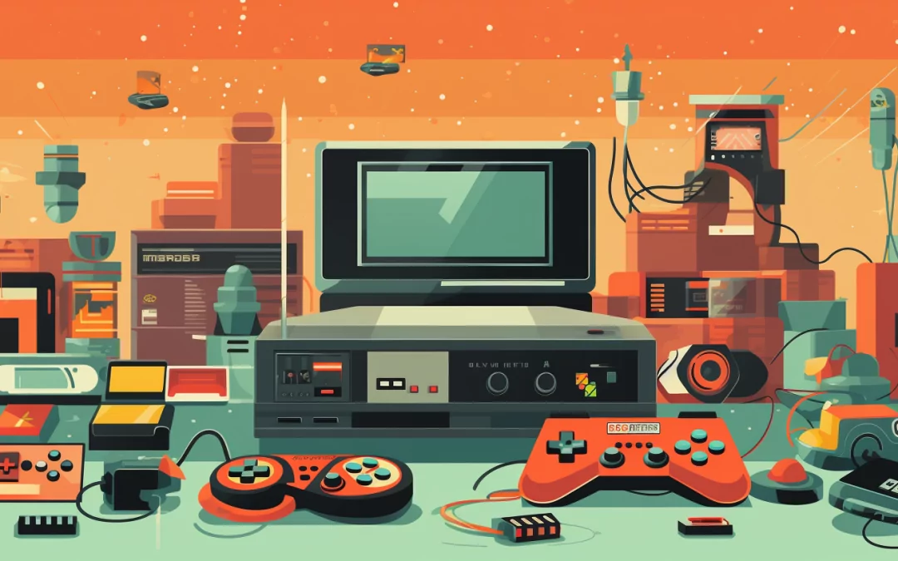
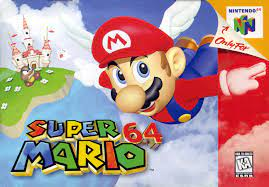
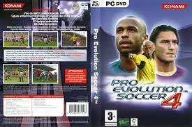

Que son los Video Juegos?
 IR ABAJOLos videojuegos son formas de entretenimiento interactivo que se desarrollan en dispositivos electrónicos, como computadoras, consolas de videojuegos, teléfonos móviles y tabletas. Estos juegos implican la participación activa del jugador, quien controla personajes o elementos en el mundo virtual del juego.
Los videojuegos pueden presentar una variedad de géneros, desde juegos de acción y aventuras hasta rompecabezas, estrategia, simulación, deportes y más. Dependiendo del juego, los jugadores pueden enfrentarse a desafíos, resolver problemas, explorar mundos virtuales, competir contra otros jugadores o sumergirse en narrativas complejas.
La industria de los videojuegos ha experimentado un crecimiento significativo a lo largo de los años y ha evolucionado en términos de gráficos, tecnología, narrativa y experiencias multijugador en línea. Los videojuegos se han convertido en una forma importante de entretenimiento para personas de todas las edades en todo el mundo.
Historia de los VideoJuegos

La evolución de los videojuegos a lo largo de las décadas ha sido fascinante. En la década de 1950, los primeros experimentos dieron lugar a la creación de "OXO" por Alexander Douglas en 1952. Ralph Baer llevó la innovación un paso adelante en 1968 al desarrollar el prototipo de la primera consola de videojuegos, que se convirtió en la Magnavox Odyssey en 1972.
El hito clave llegó en 1972 con el lanzamiento de Pong, el primer juego de arcade exitoso de Atari. Este logro marcó el inicio de los videojuegos comerciales. En 1977, Atari lanzó la Atari 2600, la primera consola de videojuegos casera ampliamente exitosa.
La década de 1980 presenció el apogeo de los arcades y la popularización de personajes icónicos como Mario y Pac-Man. Sin embargo, en 1983, la industria enfrentó una crisis debido a la saturación del mercado y juegos de baja calidad.
Con los años 90, surgieron consolas como Super Nintendo Entertainment System (SNES) y Sega Genesis. Super Mario 64 en 1996 introdujo gráficos en 3D, y títulos de lucha como Street Fighter II y Mortal Kombat se volvieron extraordinariamente populares.
En la década de 2000, la transición a gráficos de alta definición ocurrió con consolas como PlayStation 2, Xbox 360 y PlayStation 3. Además, la popularidad de los juegos en línea y móviles experimentó un crecimiento significativo.
Los años 2010 marcaron la llegada de consolas de próxima generación como PlayStation 4, Xbox One y Nintendo Switch. Los juegos independientes (indies) ganaron reconocimiento, y los eSports y juegos en línea se convirtieron en fenómenos globales.
En la década de 2020, la tecnología de realidad virtual (VR) y aumentada (AR) se integró en algunos juegos. Las consolas PlayStation 5 y Xbox Series X|S marcaron el inicio de una nueva era de videojuegos. Desde simples píxeles en blanco y negro hasta mundos virtuales complejos y realistas, los videojuegos continúan siendo una parte fundamental y emocionante del entretenimiento global.
Top Mejores videojuegos de toda la historia
#1 Tetris

Uno de los clásicos por excelencia, este videojuego que parece que llegó junto con el Big Bang es uno de los preferidos y que más ternura despierta al público. Además, en los próximos años y aunque parezca mentira podremos ver en la gran pantalla una película dedicada a este juego de bloques.
#2 Pacman ;)
Si antes hemos dicho que Tetris llegó de la mano del Big Bang, el Pacman podría considerarse el “Jordi Hurtado” de los videojuegos. Típico en toda sala recreativa, consola, cartucho de videojuego, este juego ha servido como toma de contacto de mucho fanático de este mundo. Esta famosa bola amarilla que escapa de fantasmas ha sido una inspiración para muchos.
#3 SuperMario 64 
Este rechoncho fontanero y su compañero fatigas: Luigi, han sido protagonistas absolutos de ingentes cantidades de sagas de videojuegos. Han conducido, han jugado con otros personajes, han saltado por encima de lava, han salvado a princesas…el currículum que gastan es enorme, es por eso que este videojuego es el favorito de muchos.
#4 Pokemón

El que para muchos ha sido uno de los mejores videojuegos de la historia, Pokémon ha sido lo más parecido a un familiar para muchos niños de los 90. Siempre pegados a nuestras Game Boy y de la mano de Ash Ketchum hemos pasado horas y horas en busca de los mejores Pokémon.
#5 Pro Evolution Soccer 
Esta versión del Pro Evolution Soccer ha sido el culpable de que esas quedadas con tus amigos en casa para estudiar fracasaran y acabaseis jugando al ‘Pro’ durante horas. El PES 4 se ha considerado durante mucho tiempo uno de los mejores juegos de Play Station.
#6 GTA San Andreas
Un juego que marcó a toda una generación, así se podría definir el GTA. Caracterizado por su violencia y libertad de juego, por eso y más aspectos, el GTA: San Andreas fue el juego más temido por madres y padres. Este videojuego trajo grandes novedades al mundo de los videojuegos.
#7 StreetFighters
Juego de peleas por antonomasia, Street Fighter ha dejado para la eternidad palabras como por ejemplo: Shoryuken, Hadoken o “¡Finish him!”¿Quién no ha jugado con su hermano o hermana a ser Chun-Li y Riu?
#8 Zelda
Juego que marcó una época, The Legend of Zelda ha sido el acompañante perfecto de jóvenes durante años. Muchas versiones y remakes de este juego han salido desde su lanzamiento en 1986 y siempre han triunfado, por lo que Link, el personaje protagonista, ha sido el elegido por muchos para vivir una y otra vez la aventura de salvar su pueblo de Ganondorf, el malo de muchos de los juegos.
#9 Metal Gear Solid
También conocido como MGS, este juego que nació en 1998 es considerado uno de los mejores juegos para PlayStation, y es que durante sus 19 años de existencia, el Metar Gear Sold ha conseguido mantener en vilo a todos sus seguidores cada vez que salía una nueva versión El protagonista de este videojuego es el famoso espía Snake y con él tendrás que acabar con la amenaza terrorista que pone en peligro el mundo con sus armas nucleares. Nada más lejos de la realidad.
#10 Halo
Esta conocida franquicia de videojuegos cuenta con 11 juegos diferentes en los que nos veremos enfrentados en una guerra galáctica entre la humanidad y un ejército alienígena, a partir de ahí nuestra aventura comienza. Sus lanzamientos cada vez son más multitudinario, por lo que esta fama ha hecho que Halo sea de los mejores juegos de Xbox.
PD:Información de lo 10 videojuegos sacada de la siguente pagina web: euronics.es
IR ARRIBA